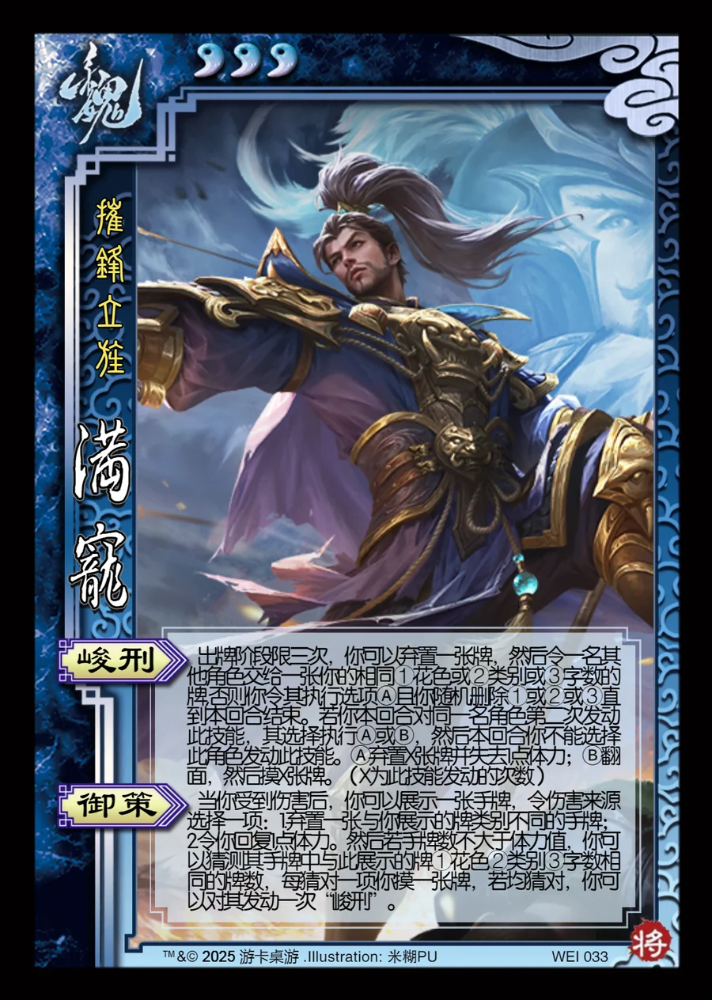

点击卡面查看大图
魏
满宠
♥3摧锋立旌
峻刑
出牌阶段限三次，你可以弃置一张牌，然后令一名其他角色交给一张你的相同①花色或②类别或③字数的牌,否则你令其执行选项Ⓐ且你随机删除①或②或③直到本回合结束。若你本回合对同一名角色第二次发动此技能，其选择执行Ⓐ或Ⓑ，然后本回合你不能选择此角色发动此技能。Ⓐ弃置X张牌并失去1点体力；Ⓑ翻面，然后摸X张牌。（X为此技能发动的次数）
御策
当你受到伤害后，你可以展示一张手牌，令伤害来源选择一项：1.弃置一张与你展示的牌类别不同的手牌；2.令你回复1点体力。然后若手牌数不大于体力值，你可以猜测其手牌中与此展示的牌①花色②类别③字数相同的牌数，每猜对一项你摸一张牌，若均猜对，你可以对其发动一次“峻刑”。